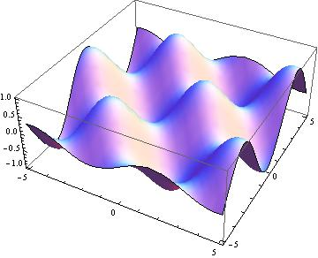
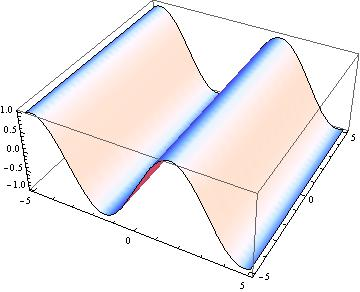

Let’s approximate and say that the mountain is shaped roughly like a paraboloid. We can peek under the mountain a bit to see the shadow it casts:
For each point in the shadow, record the height of the mountain over that point.
For our toy model, this function is \(f(x,y)=9-x^2-y^2\)
The general philosophy of functions still works.
The shape you have recorded is the graph of a function of two variables!
In this toy model, the function is \(f(x,y)=9-x^2-y^2\), so the graph is described by \(z=9-x^2-y^2\).
Take a whack at graphing these:
 
*My college roommate studied Akkadian and found this written in Akkadian on a Pepsi can in 1999
Functions of two (or more!) variables have domains just like functions of one variable.
Sometimes, the domain is a natural consequence of the shape of the function.
Usually, the domain is specified in advance.
What are the natural domains of the following functions?
She needs to have a map, like this one, with level curves.
»Which of these contour maps corresponds to a circular cone?
»What is the function \(f(x,y)\) whose graph in the region \(0\leq z\leq 9\) is a circular cone with base radius \(3\) and vertex at \((0,0,9)\)?
Here’s a link to a map of Mt. Rainier from 1924 in the US national atlas.
What does it mean when the level curves are bunched together?
We can plot level surfaces for functions of three variables (but it’s rather hard to visualize). Here’s an example with \(f(x,y,z)=x^2+y^2+2z^2\).